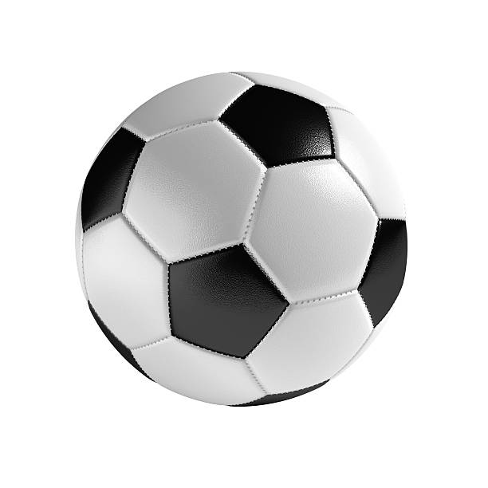
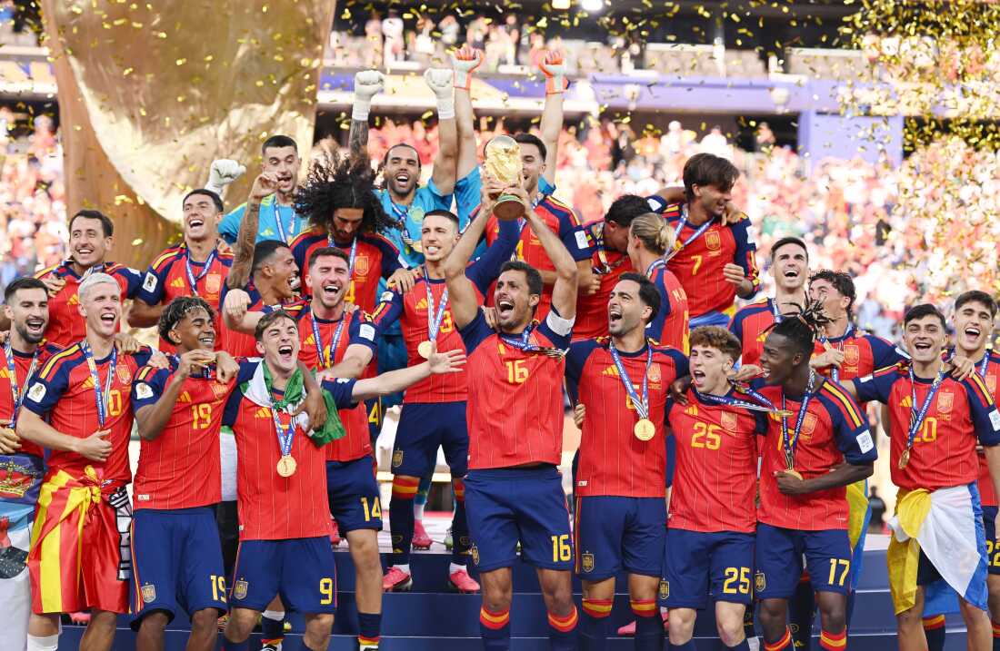

This is a summary for those who do not know what the sport it about.

Records trace soccer back to 2,000 years ago in ancient China, Greece, and Rome. Back then the "ball" was made from rock or animal hide stuffed with hair. However, modern soccer has roots in 19th century England where it first gained popularity. From there the idea spread throughout Europe and then wordl wide.
The first football association was created in 1863 in England. This was when original rules were established. Rules continued to change, but the most important rule was that carrying the ball with hands was not allowed which was what seperated soccer from rugby.
The goal of the game is to be the team with the most goals by the end of the game. In order to score you must get the ball into the opposing teams net. The game is not just about scoring. Your team must prevent the other team from scoring as well. This means both offense and defense are necessary for a team to win.
There are different leagues and tournaments that teams are able to play in. This builds a purpose to win games by creating a trophy or award for teams to work towards by winning. Some examples of leagues and tournaments are the Champions League, MLS, and the World Cup.
The World Cup is a tournament that takes place every 4 years where national teams all compete against eachother. The World Cup uses a 48-team format that splits into round-robin groups and then goings into a single-elimination knockout stage. The most recent team to win was Spain in 2026 who beat Argentina 1-0.
